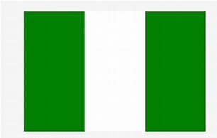

About Me
My name is Emmanuel Chidiebere Nzeh. I am from Lagos, Nigeria, and a native of Imo State. I come from an extended family with a Christian background. Some of my hobbies and interests include research, photography, modeling, content creation, coding, hanging out, tourism, skating, reading, exercising, and traveling. I am currently a student at Brigham Young University–Idaho, where I am pursuing a major in Web and Computer Programming. I am also a member of The Church of Jesus Christ of Latter-day Saints. I enjoy foods that are rich in proteins, vitamins, and minerals. While I am not a shy person, I can be somewhat introverted, especially when meeting new people for the first time.
Lagos, Nigeria
Nigeria, officially the Federal Republic of Nigeria, is a country in West Africa. it is situated between the Sahel to the north and the Gulf of Guinea in the Atlantic Ocean to the south. it covers an of 923,769 square kilometres (356,669 sq mi). With a population of more than 230 million, it is the most populous country in Africa, and the world's sixth-most populous country. Nigeria borders Niger in the north, Chad in the northeast, Cameroon in the east, and Benin in the west. Nigeria is a federal republic comprising 36 states and the Federal Capital Territory, where its capital, Abuja, is located. The largest city in Nigeria is Lagos, one of the largest metropolitan areas in the world and the largest in Africa.
